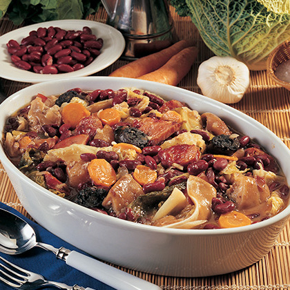
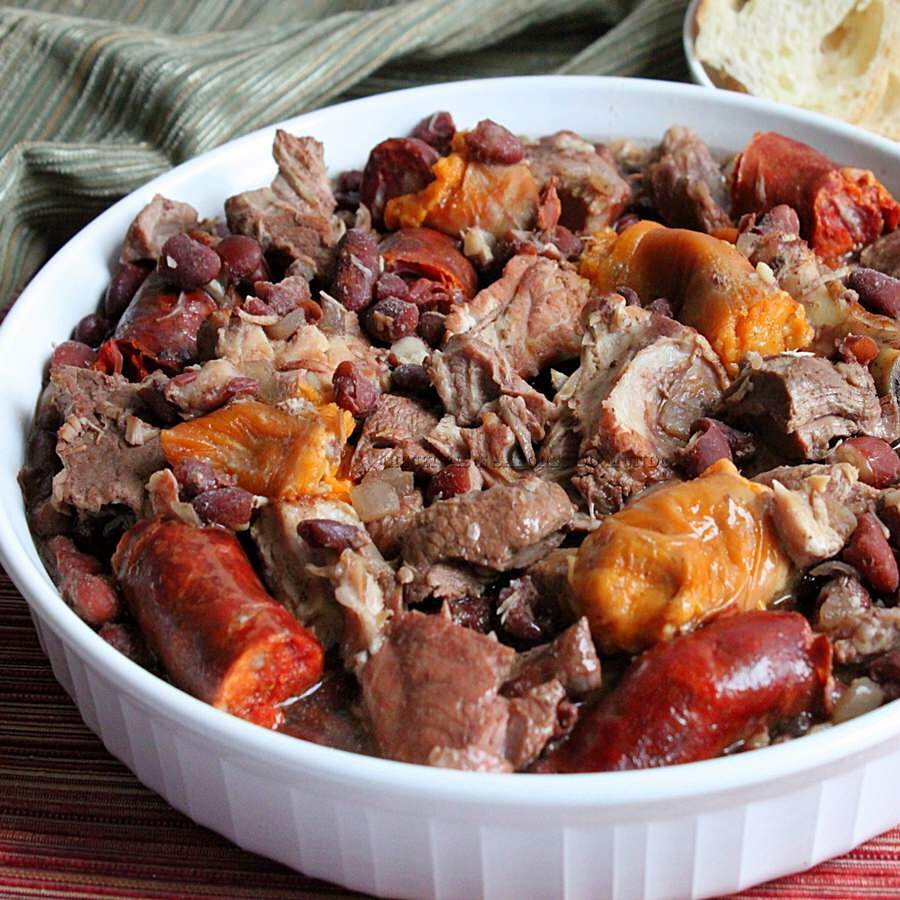

FEIJOADA
Histoire et Origine
La Feijoada est le plat national du Brésil. Ce repas copieux est un mélange épais de haricots, de porc frais et fumé, de boeuf et d'assaisonnements. Le ragoût riche et fumé est ensuite servi avec du riz, des feuilles de chou vert ou du chou frisé sauté, des tranches d'orange et garni de farine de manioc grillée.
Recette
ETAPE 1
La veille, hachez en cubes les viandes salées (pied, oreille, queue, viande et épaule) et faites tremper dans de l’eau froide; changez l’eau 6 ou 7 fois.
ETAPE 2
Puis, faites bouillir les viandes dans l’eau pour enlever l’excès de graisse.
ETAPE 3
Si vous préferez, vous pouvez dessaler les viandes comme ça : faites-les bouillir 5 min dans l’eau chaude et recommencez cette opération 2 fois. C’est plus facile et vous pouvez faire ça le jour de la préparation!
ETAPE 4
La veille aussi, laissez tremper les haricots dans l’eau froide pendant 12 h.
ETAPE 5
Le jour même, 5 h avant de servir au minimum, faites bouillir les haricots, la viande salée et les côtelettes dans l’eau, dans une grande marmite.
ETAPE 6
À fur et à mesure que l’eau se réduit, ajoutez un peu plus de l’eau bouillante et laissez cuire à feu doux pendant 3 h (couvercle fermé). Puis ajoutez les autres ingrédients salés.
ETAPE 7
Quand les haricots commenceront à cuire, ajoutez les saucissons et les saucisses, coupés en tranches; cuisinez jusqu’à ce que la sauce devienne épaisse.
ETAPE 8
Dans une poêle, faites revenir le lard, l’ail, l’oignon et les feuilles de laurier.
ETAPE 9
Ajoutez ensuite 500 ml du bouillon de haricots et laissez cuire 10 min. Mélangez.
ETAPE 10
Ajoutez le persil, la ciboulette, la cachaça et l’orange et laissez cuire à feu doux.
ETAPE 11
Déguster et ajoutez du sel, s’il faut.
ETAPE 12
Pour servir, retirez l’orange et écartez-la, l’orange enlève l’excès de graisse.
ETAPE 13
La feijoada est prête !


Associations
INSERT ASSOC